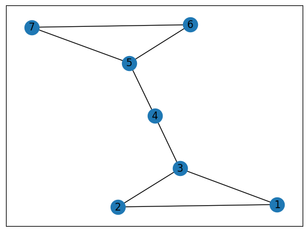
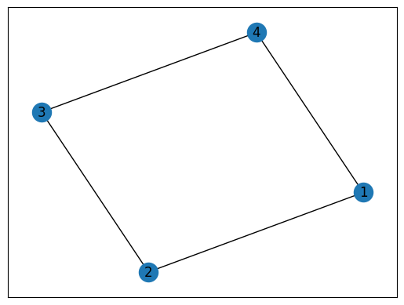
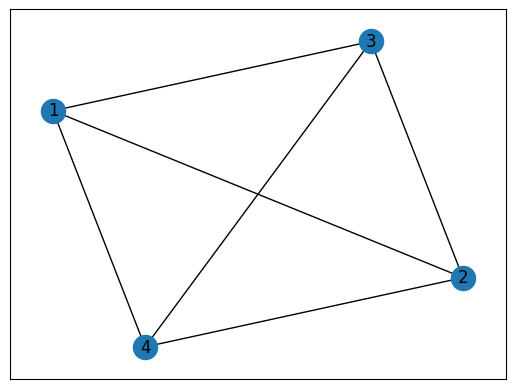
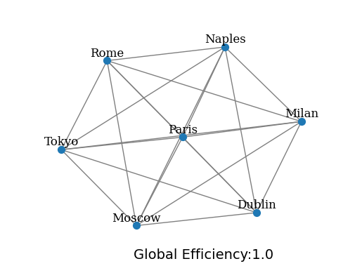
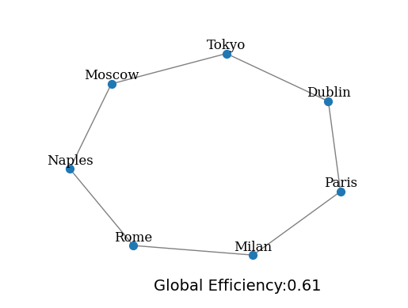
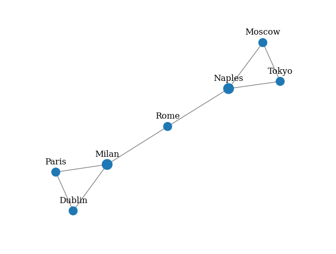
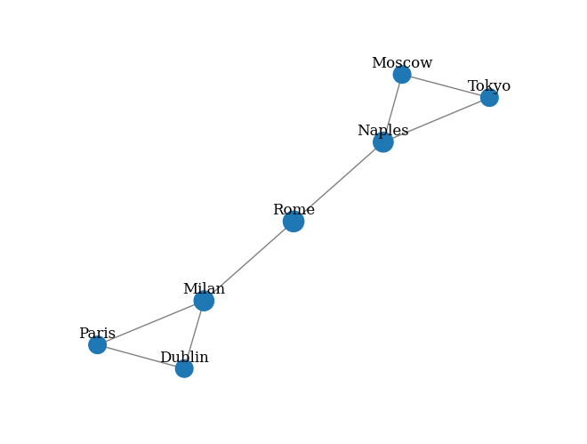
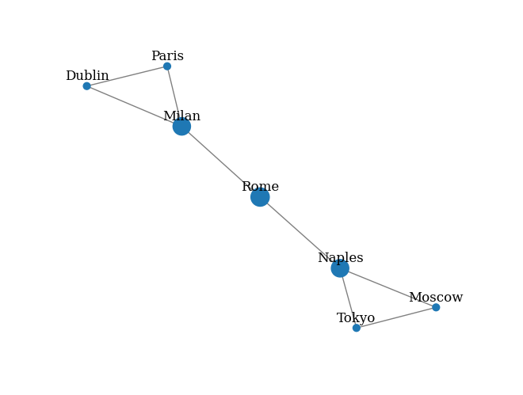

imports
# draw a simple graph
def draw_graph(G, node_names={}, filename=None, node_size=50):
pos_nodes = nx.spring_layout(G)
nx.draw(G, pos_nodes, with_labels=False, node_size=node_size, edge_color='gray')
pos_attrs = {}
for node, coords in pos_nodes.items():
pos_attrs[node] = (coords[0], coords[1] + 0.08)
nx.draw_networkx_labels(G, pos_attrs, labels=node_names, font_family='serif')
plt.axis('off')
axis = plt.gca()
axis.set_xlim([1.2*x for x in axis.get_xlim()])
axis.set_ylim([1.2*y for y in axis.get_ylim()])
if filename:
plt.savefig(filename, format="png")
# draw enhanced path on the graph
def draw_enhanced_path(G, path_to_enhance, node_names={}, filename=None):
path_edges = list(zip(path,path[1:]))
pos_nodes = nx.spring_layout(G)
plt.figure(figsize=(5,5),dpi=300)
pos_nodes = nx.spring_layout(G)
nx.draw(G, pos_nodes, with_labels=False, node_size=50, edge_color='gray')
pos_attrs = {}
for node, coords in pos_nodes.items():
pos_attrs[node] = (coords[0], coords[1] + 0.08)
nx.draw_networkx_labels(G, pos_attrs, labels=node_names, font_family='serif')
nx.draw_networkx_edges(G,pos_nodes,edgelist=path_edges, edge_color='#cc2f04', style='dashed', width=2.0)
plt.axis('off')
axis = plt.gca()
axis.set_xlim([1.2*x for x in axis.get_xlim()])
axis.set_ylim([1.2*y for y in axis.get_ylim()])
if filename:
plt.savefig(filename, format="png")대역적 지표
- 전체 네트워크의 측정값을 표현함
통합측정지표
- 노드가 서로 상호 연결되는 경향을 측정
최단경로, 최단경로길이
- setup
{1: 'Dublin', 2: 'Paris', 3: 'Milan', 4: 'Rome', 5: 'Naples', 6: 'Moscow', 7: 'Seoul'}
- shortest path
- shortest path lenghth
최단경로길이는 아래와 같이 구할수 있음
특성경로길이 (= 평균최단경로길이)
- characteristic path length = average of shortest path lenght
가능한 모든 노드 쌍 사이의 모든 최단경로 길이의 평균으로 정의한다.
\[\text{characteristic path length}=\frac{1}{|V|(|V|-1)}\sum_{i \in V} l_i\]
여기에서 \(l_i\)는 노드 \(i\)와 다른 모든 노드사이의 평균경로 길이로 정의한다. 특성경로길이가 더 짧은 네트워크는 정보를 더 빠르게 전송할 수 있다고 해석할 수 있다.
- 두 그래프 \({\cal G}_1\)1와 \({\cal G}_2\)2의 특성경로길이를 각각 계산하면 아래와 같다.
대역효율성
모든 노드 쌍에 대한 역최단경로 (inverse shortest path) 길의의 평균을 의미이다. Figure 2, Figure 3 의 그래프에서 이 값을 계산하면 아래와 같다.
- 예제1
대역효율성: 0.8333333333333334
- 예제2
대역효율성: 1.0
- 예제3
G = nx.Graph()
nodes = {1:'Dublin',2:'Paris',3:'Milan',4:'Rome',5:'Naples',6:'Moscow',7:'Tokyo'}
G.add_nodes_from(nodes.keys())
G.add_edges_from([(1,2),(1,3),(2,3),(3,4),(4,5),(5,6),(6,7),(7,5)])
print(nx.global_efficiency(G))
print(nx.local_efficiency(G))0.611111111111111
0.6666666666666667# higher efficiency
G = nx.complete_graph(n=7)
nodes = {0:'Dublin',1:'Paris',2:'Milan',3:'Rome',4:'Naples',5:'Moscow',6:'Tokyo'}
ge = round(nx.global_efficiency(G),2)
# place the text box in axes coords
ax = plt.gca()
ax.text(-.4, -1.3, "Global Efficiency:{}".format(ge), fontsize=14, ha='left', va='bottom');
draw_graph(G,node_names=nodes,filename='efficiency.png')
# lower efficiency
G = nx.cycle_graph(n=7)
nodes = {0:'Dublin',1:'Paris',2:'Milan',3:'Rome',4:'Naples',5:'Moscow',6:'Tokyo'}
le = round(nx.global_efficiency(G),2)
# place the text box in axes coords
ax = plt.gca()
ax.text(-.4, -1.3, "Global Efficiency:{}".format(le), fontsize=14, ha='left', va='bottom');
draw_graph(G, node_names=nodes,filename='less_efficiency.png')
Clustering coefficient
{1: 1.0,
2: 1.0,
3: 0.3333333333333333,
4: 0,
5: 0.3333333333333333,
6: 1.0,
7: 1.0}Centrality
{1: 0.3333333333333333,
2: 0.3333333333333333,
3: 0.5,
4: 0.3333333333333333,
5: 0.5,
6: 0.3333333333333333,
7: 0.3333333333333333}dc = nx.degree_centrality(G)
node_size=[(v + 0.01) * 400 for v in dc.values()]
draw_graph(G, node_names=nodes, node_size=node_size,filename='deg_centr.png')
df = pd.DataFrame(dc,index=['Degree centrality'])
df.columns = nodes.values()
df| Dublin | Paris | Milan | Rome | Naples | Moscow | Tokyo | |
|---|---|---|---|---|---|---|---|
| Degree centrality | 0.333333 | 0.333333 | 0.5 | 0.333333 | 0.5 | 0.333333 | 0.333333 |

{1: 0.4,
2: 0.4,
3: 0.5454545454545454,
4: 0.6,
5: 0.5454545454545454,
6: 0.4,
7: 0.4}dc = nx.closeness_centrality(G)
node_size=[(v + 0.1) * 400 for v in dc.values()]
draw_graph(G, node_names=nodes, node_size=node_size,filename='clos_centr.png')
df = pd.DataFrame(dc,index=['Closeness centrality'])
df.columns = nodes.values()
df| Dublin | Paris | Milan | Rome | Naples | Moscow | Tokyo | |
|---|---|---|---|---|---|---|---|
| Closeness centrality | 0.4 | 0.4 | 0.545455 | 0.6 | 0.545455 | 0.4 | 0.4 |

{1: 0.0,
2: 0.0,
3: 0.5333333333333333,
4: 0.6,
5: 0.5333333333333333,
6: 0.0,
7: 0.0}dc = nx.betweenness_centrality(G)
node_size=[(v + 0.1) * 400 for v in dc.values()]
draw_graph(G, node_names=nodes, node_size=node_size,filename='bet_centrality.png')
df = pd.DataFrame(dc,index=['Betweenness centrality'])
df.columns = nodes.values()
df| Dublin | Paris | Milan | Rome | Naples | Moscow | Tokyo | |
|---|---|---|---|---|---|---|---|
| Betweenness centrality | 0.0 | 0.0 | 0.533333 | 0.6 | 0.533333 | 0.0 | 0.0 |

Assortativity
Modularity
import networkx.algorithms.community as nx_comm
G = nx.Graph()
nodes = {1:'Dublin',2:'Paris',3:'Milan',4:'Rome',5:'Naples',6:'Moscow',7:'Tokyo'}
G.add_nodes_from(nodes.keys())
G.add_edges_from([(1,2),(1,3),(2,3),(3,4),(4,5),(5,6),(6,7),(7,5)])
# partitions can be provided manually
print(nx_comm.modularity(G, communities=[{1,2,3,4},{5,6,7}]))
# or automatically computed using networkx
print(nx_comm.modularity(G, nx_comm.label_propagation_communities(G)))0.3671875
0.3671875